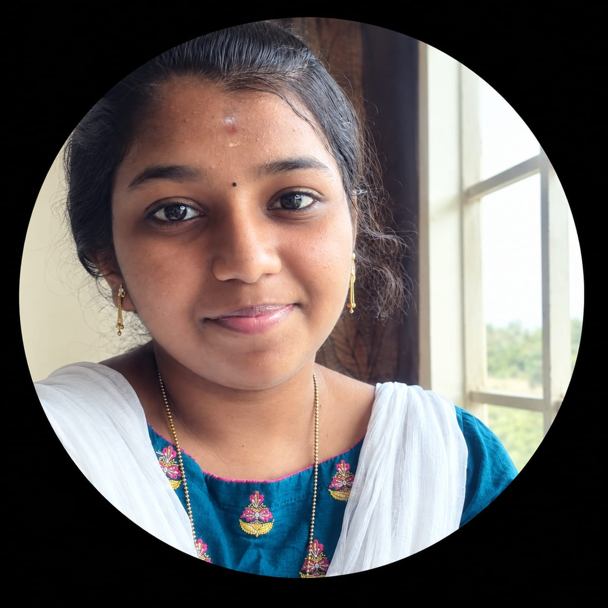

HELLO, I'M
Passionate about programming, software development and emerging technologies.
Explore My Portfolio
Hi, I’m Lavanya P, a passionate Information Technology student with a strong interest in programming, software development, and emerging technologies.
I enjoy learning how technology works and turning my knowledge into practical solutions. I have explored programming languages such as C, C++, Java, and Python, along with web technologies including HTML, CSS, and JavaScript.
I believe that continuous learning and consistent improvement are the keys to becoming a successful technology professional. I am currently strengthening my programming, problem-solving, and technical skills while exploring areas such as Artificial Intelligence and Machine Learning.
My goal is to build a strong foundation in technology, gain practical experience, and grow into a confident and skilled IT professional.
C
C++
Java
Python
HTML
CSS
JavaScript
SQL
Git & GitHub
Object-Oriented Programming
Problem Solving
Ramco Institute of Technology
Currently studying – 2nd Year
Expected Graduation: 2029
Government Girls Higher Secondary School, Chatrapatti
Tamil Nadu State Board
Completed: 2025
Government Girls Higher Secondary School, Chatrapatti
Tamil Nadu State Board
Completed: 2023
Python for Data Science
Certification CompletedAI/ML using Python
Currently LearningStrengthening practical knowledge through online learning.
Programming, OOP, Web Technologies, Data Science and AI/ML.
Podcast content will be added here.
Video resume will be added here.
Satori content will be added here.